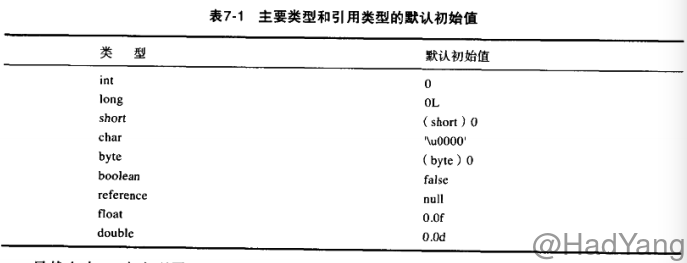

深入Java虚拟机读书笔记——类装载、连接和初始化
文章目录
在前面的文章《深入Java虚拟机读书笔记——类加载器》中我们介绍了JVM中类加载器，类加载器是JVM中重要的组成部分，当类第一次被使用时，由它负责类的装载、连接和初始化，进而能让我们使用类来生成对象等等。
简介
Java虚拟机通过装载、连接和初始化一个类型，使该类型可以被正在运行的Java程序使用。
- 装载：把二进制形式的Java类型读入Java虚拟机中。
- 连接：把装载的二进制形式的类型数据合并到虚拟机的运行时状态中去。 1. 验证：确保Java类型数据格式正确并且适合于Java虚拟机使用。 2. 准备：负责为该类型分配它所需内存。 3. 解析：把常量池中的符号引用转换为直接引用。(可推迟到运行中的程序真正使用某个符号引用时再解析)
- 初始化：为类变量赋适当的初始值
所有Java虚拟机实现必须在每个类或接口首次主动使用时初始化。以下六种情况符合主动使用的要求：
- 当创建某个类的新实例时(new、反射、克隆、序列化)
- 调用某个类的静态方法
- 使用某个类或接口的静态字段，或对该字段赋值(用final修饰的静态字段除外，它被初始化为一个编译时常量表达式)
- 当调用Java API的某些反射方法时。
- 初始化某个类的子类时。
- 当虚拟机启动时被标明为启动类的类。
除以上六种情况，所有其他使用Java类型的方式都是被动的，它们不会导致Java类型的初始化。
对于接口来说，只有在某个接口声明的非常量字段被使用时，该接口才会初始化，而不会因为事先这个接口的子接口或类要初始化而被初始化。
父类需要在子类初始化之前被初始化，所以这些类应该被装载了。当实现了接口的类被初始化的时候，不需要初始化父接口。然而，当实现了父接口的子类(或者是扩展了父接口的子接口)被装载时，父接口也要被装载。(只是被装载，没有初始化)
装载
- 通过该类型的全限定名，产生一个代表该类型的二进制数据流。
- 解析这个二进制数据流为方法去内的内部数据结构。
- 创建一个表示该类型的
java.lang.Class类的实例。
Java虚拟机在识别Java class文件，产生了类型的二进制数据后，Java虚拟机必须把这些二进制数据解析为与实现相关的内部数据结构。装载的最终产品就是Class实例，它称为Java程序与内部数据结构之间的接口。要访问关于该类型的信息(存储在内部数据结构中)，程序就要调用该类型对应的Class实例的方法。这样一个过程，就是把一个类型的二进制数据解析为方法区中的内部数据结构，并在堆上建立一个Class对象的过程，这被称为"创建"类型。
验证
确认装载后的类型符合Java语言的语义，并且不会危及虚拟机的完整性。
装载时验证：检查二进制数据以确保数据全部是预期格式、确保除Object之外的每个类都有父类、确保该类的所有父类都已经被装载。正式验证阶段：检查final类不能有子类、确保final方法不被覆盖、确保在类型和超类型之间没有不兼容的方法声明(比如拥有两个名字相同的方法，参数在数量、顺序、类型上都相同，但返回类型不同)。符号引用的验证：当虚拟机搜寻一个呗符号引用的元素(类型、字段或方法)时，必须首先确认该元素存在。如果虚拟机发现元素存在，则必须进一步检查引用类型有访问该元素的权限。
准备
当Java虚拟机装载一个类，并执行了一些验证之后，类就可以进入准备阶段。在准备阶段，Java虚拟机为类变量分配内存，设置默认初始值。但在到到初始化阶段之前，类变量都没有被初始化为真正的初始值。

boolean在内部常常被实现为一个int，会被默认初始化为0。
解析
类型经过连接的前两个阶段–验证和准备–之后，就可以进入第三个阶段–解析。解析的过程就是在类型的常量池总寻找类、接口、字段和方法的符号引用，把这些符号引用替换为直接引用的过程。
-
类或接口的解析：判断所要转化成的直接引用是对数组类型，还是普通的对象类型的引用，从而进行不同的解析。 -
字段解析：对字段进行解析时，会先在本类中查找是否包含有简单名称和字段描述符都与目标相匹配的字段，如果有，则查找结束；如果没有，则会按照继承关系从上往下递归搜索该类所实现的各个接口和它们的父接口，还没有，则按照继承关系从上往下递归搜索其父类，直至查找结束，
初始化
为类变量赋予“正确”的初始值。这里的“正确”的初始值是指程序员希望这个类变量所具备的初始值。所有的类变量(即静态量)初始化语句和类型的静态初始化器都被Java编译器收集在一起，放到一个特殊的方法中。 对于类来说，这个方法被称作类初始化方法；对于接口来说，它被称为接口初始化方法。在类和接口的class文件中，这个方法被称为<clinit>。
初始化类的步骤：
- 如果存在直接父类，且直接父类没有被初始化，先初始化直接父类。
- 如果类存在一个类初始化方法，执行此方法。
这个步骤是递归执行的，即第一个初始化的类一定是Object。初始化接口并不需要初始化它的父接口。
Java虚拟机必须确保初始化过程被正确地同步。 如果多个线程需要初始化一个类，仅仅允许一个线程来进行初始化，其他线程需等待。
这个特性可以用来写单例模式。
<clinit>()方法
- 对于静态变量和静态初始化语句来说：执行的顺序和它们在类或接口中出现的顺序有关。
- 并非所有的类都需要在它们的
class文件中拥有<clinit>()方法， 如果类没有声明任何类变量，也没有静态初始化语句，那么它就不会有<clinit>()方法。如果类声明了类变量，但没有明确的使用类变量初始化语句或者静态代码块来初始化它们，也不会有<clinit>()方法。如果类仅包含静态final常量的类变量初始化语句，而且这些类变量初始化语句采用编译时常量表达式，类也不会有<clinit>()方法。只有那些需要执行Java代码来赋值的类才会有<clinit>() final常量：Java虚拟机在使用它们的任何类的常量池或字节码中直接存放的是它们表示的常量值。
主动使用和被动使用
主动使用有六种情况，在前面已经写过。
使用一个非常量的静态字段只有当类或接口的确声明了这个字段时才是主动使用。 比如：类中声明的字段可能被子类引用；接口中声明的字段可能被子接口或实现了这个接口的类引用。对于子类、子接口或实现了接口的类来说，这是被动使用–不会触发它们的初始化。只有当字段的确是被类或接口声明的时候才是主动使用。